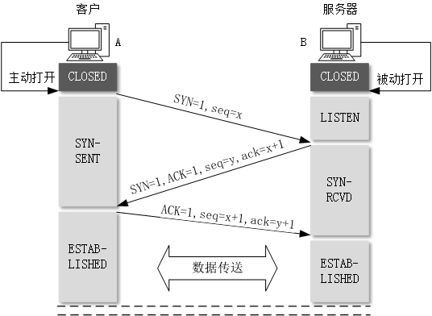
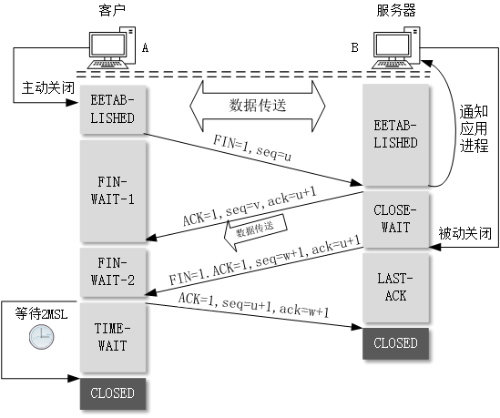
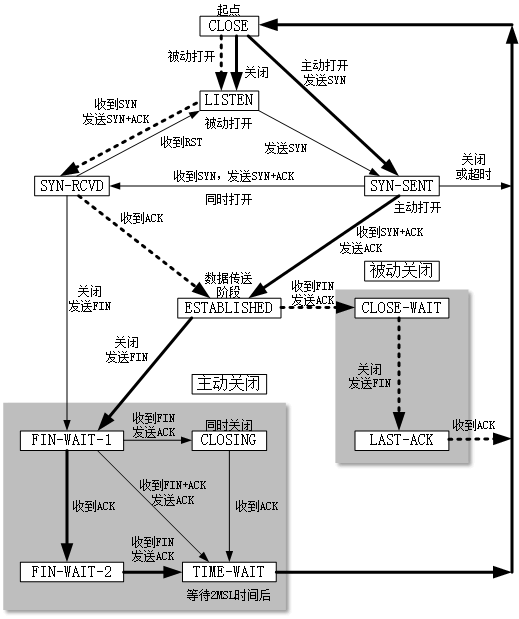

TCP的连接建立
TCP建立连接的过程：
- 假设主机A运行的是TCP客户程序，而B运行TCP服务器程序。最初两端的TCP进程都处于CLOSED状态。
- B的TCP服务器进程先创建传输控制块TCB，准备接受客户进程的连接请求。然后服务器进程就处于LISTEN状态，等待客户的连接请求。
- A的TCP客户进程也是首先创建传输控制块TCB，然后向B发出连接请求报文段，这时首部中的同步位SYN=1，同时选择一个初始序号seq=x。这时，TCP客户进程进入SYN-SENT状态。
- B收到连接请求报文段后，如同意建立连接，则向A发送确认。在确认报文段中应把SYN位和ACK位都置1，确认号ack=x+1，同时也为自己选择一个初始序号seq=y。这时，服务器进程进入SYN-RCVD状态。
- TCP客户进程收到B的确认后，还要向B给出确认。确认报文段的ACK置1，确认号ack=y+1，而自己的序号seq=x+1。这时，TCP连接已经建立，A进入ESTABLISHED状态。
- 当B手打A的确认后，也进入ESTABLISHED状态。
以上给出的连接建立过程叫做三次握手，下面画出TCP建立连接的过程。

TCP的连接释放
TCP连接释放的过程：
- A把释放报文段首部的终止控制位FIN置为1，其序号seq=u。这时，A进入FIN-WAIT-1状态，等待B的确认。
- B收到连接释放报文段后即发出确认，确认号ack=u+1，而这个报文段自己的序号seq=v，然后B进入CLOSE-WAIT状态。TCP服务器进程这时通知高层应用进程，因而从A到B这个方向的连接就释放了，这时TCP连接处于半关闭状态。
- A收到B的确认后，就进入FIN-WAIT-2状态，等待B发出的连接释放报文段。
- 若B已经没有要想A发送的数据，其应用进程就通知TCP释放连接。B把FIN置为1，序号为seq=w，并且还要发送上次已经发送过的确认号ack=u+1。这时，B进入LAST-ACK状态。
- A在收到B的连接释放报文段后发出确认，把ACK置为1，确认号ack=w+1，序号是seq=u+1，然后自己进入TIME-WAIT状态。但现在TCP连接还没释放掉，要经过时间等待计时器设置的2MSL后，A才进入到CLOSED状态。
- B只要收到A发出的确认，就进入到CLOSED状态。

TCP的有限状态机
为了更清晰地看出TCP连接的各种状态之前的关系，下图给出了TCP的有限状态机。图中每一个方框即TCP可能具有的状态。每一个方框中的英文字符串是TCP标准所使用的TCP连接状态名。状态之间的箭头表示可能发生的状态变迁。箭头旁边的字表明引起这种变迁的原因，或表明发生状态变迁后又出现了什么动作。图中粗实线箭头表示对客户进程的正常变迁，粗虚实线箭头表示对服务器进程的正常变迁，而细实线箭头表示异常变迁。
